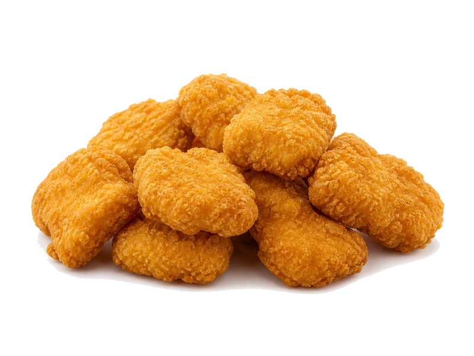

Mięsa i ryby
Nuggetsy z kurczaka
Nuggetsy z kurczaka: 15 g białka, 296 kcal, 26 g węglowodanów i 14 g tłuszczu na 100 g. Kategoria: Mięsa i ryby.
Kalorie296 kcalna 100 g
Białko / proteiny15 g
Węglowodany26 g
Tłuszcz14 g
Cena (szac.)~3,39 złza 100 g
Ceny zaktualizowano: maj 2026 (szacunek — ceny w popularnych supermarketach)
Porcja: porcja (100g)
| Kalorie | 296 kcal |
|---|---|
| Białko | 15 g |
| Węglowodany | 26 g |
| Tłuszcz | 14 g |
| Cena (szac.) | ~3,39 zł |
Szczegółowe składniki odżywcze na 100 g
| Wartość energetyczna (kalorie) | 296 kcal |
|---|---|
| Białko (proteiny) | 15 g |
| Węglowodany | 26 g |
| Tłuszcz | 14 g |
| Tłuszcze nasycone | 3 g |
| Tłuszcze nienasycone | 11 g |
| Witaminy i minerały | Żelazo, Cynk, Witamina B12 |
| Współczynnik kcal / 1 g białka | 19.7 |
| Cena produktu (szac. za 100 g) | ~3,39 zł |
| Cena za 100 g białka (szac.) | ~22,60 zł |